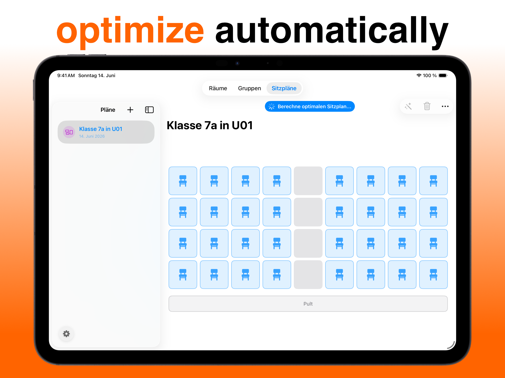

Seating Chart Generator: Automatic, Not Just Random
A seating chart generator should take work off your plate — not just roll dice with names. A purely random chart will eventually seat your two biggest talkers right next to each other, guaranteed. Here's what a good generator needs and how the automatic optimization in Platzwahl works.
Random isn't enough: what a generator must handle
Most online tools scatter names across a grid at random. Fast — but rarely usable in a real classroom. A generator that actually saves time has to understand restrictions:
- These two students never side by side
- This student always in the front row
- Restless students at the edges and separated from each other
- Preferred neighbors together when possible
And it has to work with your actual room: table groups, U-shape, gaps — not just a rigid grid of rows.
How the algorithm in Platzwahl works
Platzwahl uses a genetic algorithm: the app generates many candidate charts, scores each one against your rules, and keeps recombining the best variants until the chart is optimal. You see the result as a score — at a glance you know how good the chart is and which rule is still violated where. Instead of trusting blindly, you can fine-tune or simply generate again.
Four steps to a generated chart
- Lay out your room as a grid Your classroom the way it really is — gaps, table groups and all.
- Import your class Type names in or load the whole list as CSV from Excel or Google Sheets.
- Set restrictions Disruption level, front-row seats, separations, preferred neighbors — marked per student in seconds.
- Generate & print Tap "Optimize", check the score, export as PDF. Done.

Get Platzwahl for free
Free download · iPhone & iPad · iOS 17+ · No account needed
Frequently asked questions
Is there a free seating chart generator for classrooms?
Yes. The iOS app Platzwahl generates seating charts for free — including per-student restrictions, a score rating, and PDF export on iPhone and iPad.
Can the generator handle restrictions?
Yes — that's the point. Separations, front-row needs, disruption levels and preferred neighbors all flow into the computation, with more important rules weighted higher.
What's the difference to an online random generator?
Three things: rules instead of pure chance, a freely designed room instead of a fixed grid, and privacy — student names stay on your device instead of in a web form.